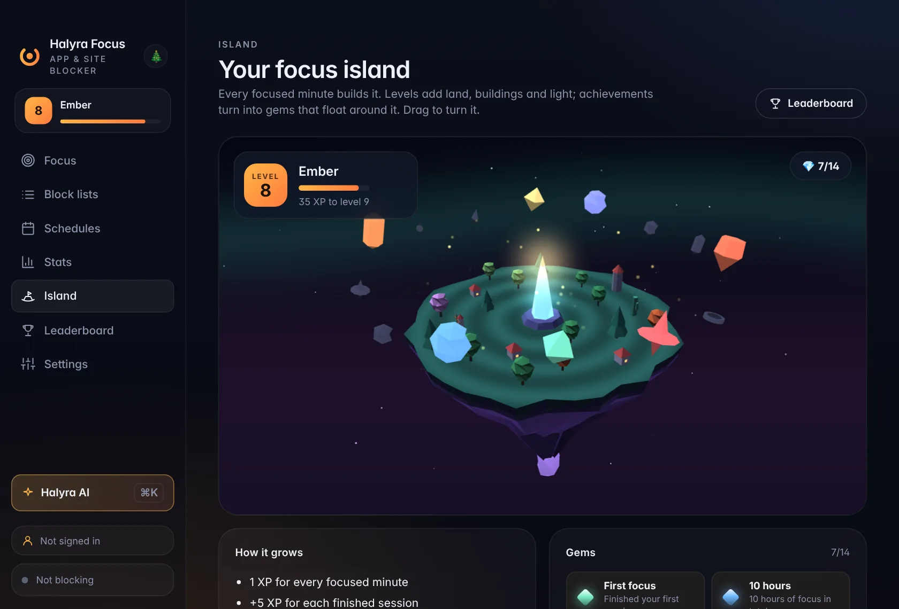

Your focus builds a little world.
No streak shaming, no coins to buy. Every focused minute grows your own 3D island — keep scrolling and watch it happen.

- 01 · Minutes
Every focused minute is a brick.
Start a session and your island starts growing. Level 1 is a seedling, level 80 is a legend. No shortcuts, and levels can’t be bought.
- 02 · Sessions
Finish a session, something new appears.
Trees, houses, a lighthouse, a rocket — whatever you grew in the timer moves onto your island for good.
- 03 · Gems
Real milestones become gems.
Your first focus. Ten hours. A 7-day streak. A session before 7 am. Each one is a gem with its own shape and colour, orbiting your island.
- 04 · No guilt
Missed a day? Your streak survives.
One rest day a week is free — the streak freeze kicks in by itself. We count what you did, not what you didn’t.
- 05 · Friends
Race your friends — only if you want.
Make a group, share the code, and see who focused most this week. Only focus minutes count, never what you block. It’s off until you join.